Sách Kết nối tri thức • Học từng bài một: nghe đọc 🔊 → đọc từng đoạn ngắn → trả lời kiểm tra nhanh ⚡ → lật flashcard. Câu chữ rất ngắn, dễ hiểu. Học hết 14 bài mới xuống Phần Tổng kết nhé!
📖 Phần 1 — Học tập (học từng bài)
Nhãn trên mỗi bài: ⭐ Giữa kì 1 (Chương 1: Nhà ở) • 📚 Sau giữa kì (Chương 2: Thực phẩm) • 🌿 Mở rộng học kì 1 (Chương 3: Trang phục — nhiều trường học tiếp ở đầu học kì 2) • ⚡ Học kì 2 (Chương 4: Đồ dùng điện trong gia đình). Đọc chậm cũng không sao, có nút 🔊 nghe đọc giúp em!
👀 Chế độ xem:
⭐ Ôn giữa kì 1
Bài 1. Khái quát về nhà ở
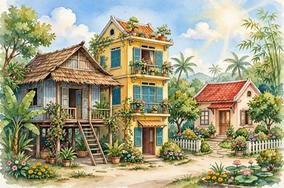
🏠 Mỗi ngày em đều về nhà. Nhà là nơi em ăn cơm. Nhà là nơi em ngủ. Nhà còn che mưa, che nắng cho cả nhà. Hôm nay mình tìm hiểu: nhà ở quan trọng thế nào nhé!
Nhà ở là công trình để ở. Công trình là thứ con người xây nên.
Nhà giúp che chở em: tránh mưa, tránh nắng, tránh gió bão.
Nhà còn tránh những điều xấu bên ngoài. Ví dụ: tránh trộm, tránh thú dữ.
Nhà là nơi cả nhà sinh hoạt. Sinh hoạt là các việc hằng ngày: ăn cơm, ngủ, học bài.
Tránh mưa, nắng, gió bão. Và tránh những nguy hiểm ở bên ngoài.
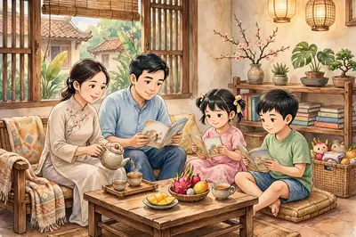
👨👩👧👦 Cả nhà sinh hoạt trong nhà — ăn cơm, nghỉ ngơi, học bài đều ở nhà. (Tranh minh họa do AI vẽ)
Một ngôi nhà thường có 7 phần chính.
Móng nhà: nằm dưới đất. Móng giữ cho nhà đứng vững.
Sàn nhà: nền phẳng để đi lại và kê đồ đạc.
Khung nhà: gồm cột và dầm, như bộ xương đỡ cả ngôi nhà.
Tường nhà: bao quanh nhà, che gió và che mưa.
Mái nhà: ở trên cùng. Mái che mưa, che nắng.
Cửa ra vào: để đi vào, đi ra. Cửa sổ: để lấy ánh sáng và gió mát.
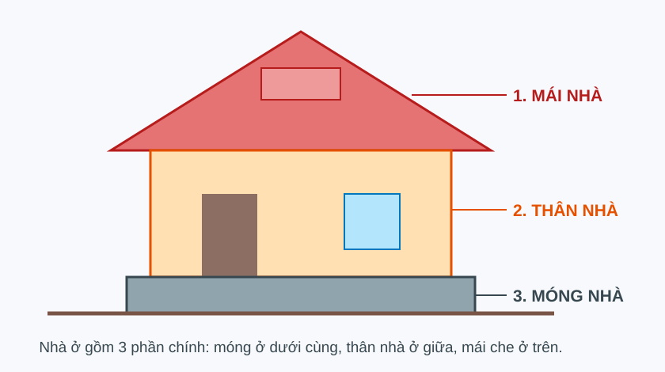
🏠 Sơ đồ 7 phần chính của nhà: móng, sàn, khung, tường, mái, cửa ra vào, cửa sổ. Em nhìn hình và đọc tên từng phần nhé!
Trong nhà có nhiều khu vực. Khu vực là từng khoảng riêng cho một việc.
Khu sinh hoạt chung: tiếp khách, cả nhà ngồi chơi.
Khu nghỉ ngơi: để ngủ. Khu nấu ăn: để nấu cơm.
Khu vệ sinh: để tắm, rửa. Nhiều nhà có thêm khu thờ cúng ông bà.
Đáp án B. B nói được việc lớn nhất của nhà ở. A và C đều đúng, nhưng chỉ là chi tiết nhỏ — không phải ý chính.
Mỗi nơi có kiểu nhà khác nhau. Vì sao? Vì trời khác nhau, tiền khác nhau, thói quen khác nhau.
Ở nông thôn: hay có nhà ba gian.
Ở thành phố: nhà liền kề, nhà chung cư, nhà biệt thự.
Ở vùng núi: nhà sàn. Sàn cao để tránh ẩm và thú dữ.
Ở vùng sông nước: nhà nổi trên sông.
🏡 Nhà ba gian — thường thấy ở nông thôn. (Tranh minh họa do AI vẽ)⛰️ Nhà sàn — thường thấy ở vùng núi. (Tranh minh họa do AI vẽ)🌊 Nhà nổi — ở vùng sông nước. (Tranh minh họa do AI vẽ)
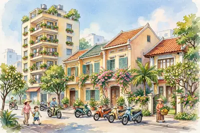
🏢 Nhà chung cư — ở thành phố. (Tranh minh họa do AI vẽ)
Ở vùng núi. Sàn cao để tránh ẩm ướt, thú dữ và nước lũ.
⚡ Nhớ nhanh — bấm vào thẻ để lật xem đáp án
Nhà có mấy phần chính? Là những phần nào?
(Bấm vào thẻ để lật)
✅ Đáp án7 phần chính: móng, sàn, khung, tường, mái, cửa ra vào, cửa sổ.
Nhà sàn thường có ở vùng nào?
(Bấm vào thẻ để lật)
✅ Đáp ánỞ vùng núi.
⭐ Điểm cần nhớ: • Nhà là nơi ở, che chở và sinh hoạt của cả nhà. • Nhà có 7 phần chính: móng, sàn, khung, tường, mái, cửa ra vào, cửa sổ. • Mỗi vùng có kiểu nhà riêng: ba gian, nhà sàn, nhà nổi, chung cư.
💡 Mẹo nhớ: Đếm đủ 7 phần của nhà: Móng – Sàn – Khung – Tường – Mái – Cửa vào – Cửa sổ. Nhớ nhé: móng ở dưới cùng, mái ở trên cùng!
🔍 Bí mật thú vị: Nhà nổi ở miền Tây nổi theo nước! Nước lên thì nhà lên. Nước xuống thì nhà xuống.
🧠 Sơ đồ tư duy
❓ Câu hỏi gợi nhớ
Nhà là nơi ở. Nhà che chở con người trước mưa, nắng, gió bão và nguy hiểm. Nhà còn là nơi cả nhà sinh hoạt mỗi ngày.
Phần móng nhà. Móng giữ cho ngôi nhà đứng vững.
Khu sinh hoạt chung, khu nghỉ ngơi, khu nấu ăn, khu vệ sinh. Nhiều nhà có thêm khu thờ cúng.
Vì mỗi nơi có thời tiết khác nhau, điều kiện tiền bạc khác nhau và thói quen sống khác nhau.
🧱 Em có biết một ngôi nhà được xây thế nào không? Trước hết phải vẽ bản vẽ. Sau đó thợ xây từng bước một. Mình cùng xem các bước nhé!
Muốn xây nhà, cần nhiều vật liệu. Vật liệu là đồ dùng để xây.
Gạch, ngói: để xây tường và lợp mái.
Xi măng, cát, đá: trộn với nước thành bê tông rất cứng.
Thép: đặt bên trong bê tông cho nhà chắc hơn. Ta gọi là bê tông cốt thép.
Gỗ, kính, sơn: làm cửa, làm đồ trong nhà, sơn cho đẹp.
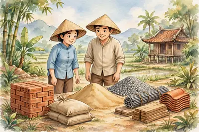
🧱 Các vật liệu xây nhà hay gặp: gạch, xi măng, cát, thép, gỗ. (Tranh minh họa do AI vẽ)
Đó là thép. Bê tông có thép bên trong gọi là bê tông cốt thép.
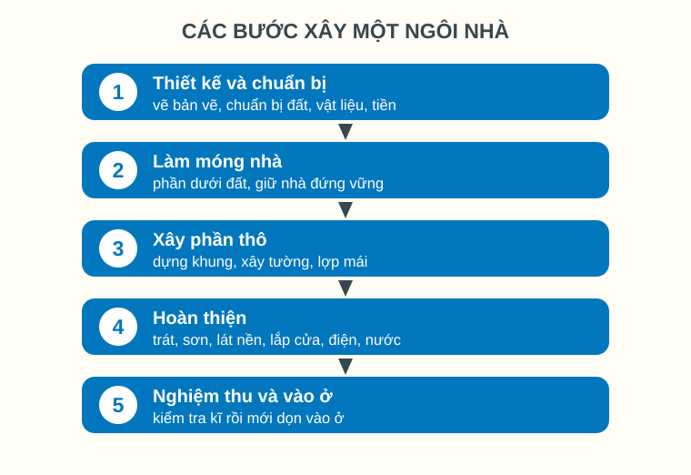
🔢 Sơ đồ 5 bước xây nhà. Em nhìn số 1 → 5 và đọc theo thứ tự nhé!
Bước 1 – Thiết kế và chuẩn bị: vẽ bản vẽ. Chuẩn bị đất, vật liệu, tiền.
Bước 2 – Làm móng nhà: đào đất, đổ móng cho chắc. Đây là việc đầu tiên của thi công thô.
Bước 3 – Thi công thô (xây phần thô): làm khung tường, xây tường, cán nền, làm mái, lắp khung cửa, làm hệ thống ống nước, làm đường điện. Tính cả làm móng nhà ở Bước 2, thi công thô gồm đủ 8 việc. Đây là phần 'xương' của nhà.
Bước 5 – Nghiệm thu: kiểm tra kĩ mọi thứ. Tốt rồi mới dọn vào ở.
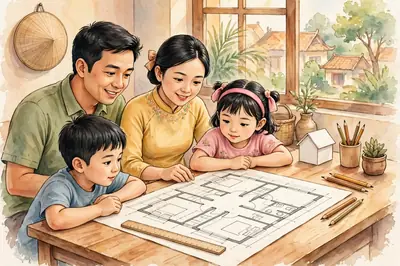
✏️ Bước 1: vẽ bản vẽ, chuẩn bị. (Tranh minh họa do AI vẽ)
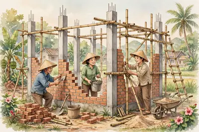
🧱 Bước 3: thi công thô — khung, tường, nền, mái, điện nước. (Tranh minh họa do AI vẽ)
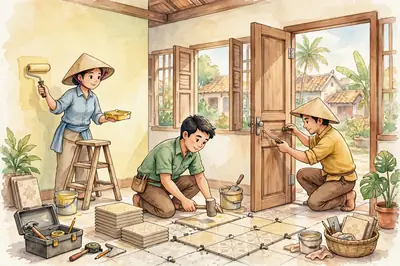
🎨 Bước 4: hoàn thiện — sơn, lát nền, lắp cửa. (Tranh minh họa do AI vẽ)
Đáp án B. B tóm được cả quá trình xây nhà. A thiếu nhiều bước quan trọng. C chỉ nói một chi tiết nhỏ.
Ở công trường rất nguy hiểm. Thợ xây phải đội mũ bảo hộ để bảo vệ đầu.
Giàn giáo phải thật chắc chắn.
Em nhỏ nhớ nhé: không được chơi gần nơi đang xây nhà.
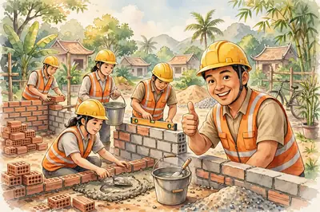
⛑️ Thợ xây đội mũ bảo hộ để an toàn. (Tranh minh họa do AI vẽ)
⚡ Nhớ nhanh — bấm vào thẻ để lật xem đáp án
Bước đầu tiên khi xây nhà là gì?
(Bấm vào thẻ để lật)
✅ Đáp ánThiết kế — vẽ bản vẽ và chuẩn bị.
Xây phần thô gồm những việc gì?
(Bấm vào thẻ để lật)
✅ Đáp ánThi công thô gồm 8 việc: làm móng nhà, làm khung tường, xây tường, cán nền, làm mái, lắp khung cửa, làm hệ thống ống nước, làm đường điện.
⭐ Điểm cần nhớ: • Vật liệu chính: gạch, xi măng, cát, đá, thép, gỗ. • Thi công thô gồm 8 việc: làm móng nhà, làm khung tường, xây tường, cán nền, làm mái, lắp khung cửa, làm hệ thống ống nước, làm đường điện. • Xây nhà theo thứ tự: thiết kế → thi công thô → hoàn thiện → nghiệm thu. • Ở công trường phải đội mũ bảo hộ.
💡 Mẹo nhớ: Nhớ các bước bằng câu: Vẽ – Thô – Đẹp – Ở. Vẽ bản vẽ, thi công thô, hoàn thiện cho đẹp, nghiệm thu rồi vào ở.
🔍 Bí mật thú vị: Bê tông cốt thép cứng đến mức người ta dùng để xây nhà cao hàng chục tầng. Và xây cả cầu lớn qua sông!
🧠 Sơ đồ tư duy
❓ Câu hỏi gợi nhớ
Ví dụ: gạch, xi măng, cát, thép. Còn có đá, gỗ, kính, sơn, ngói…
Là thi công thô (tiếp theo): làm khung tường, xây tường, cán nền, làm mái, lắp khung cửa, làm hệ thống ống nước, làm đường điện.
Thi công thô gồm 8 việc: làm móng nhà, làm khung tường, xây tường, cán nền, làm mái, lắp khung cửa, làm hệ thống ống nước, làm đường điện — tạo nên hình dáng chính của ngôi nhà.
Để kiểm tra nhà đã chắc chắn và an toàn chưa. Có lỗi thì sửa ngay, ở mới yên tâm.
📱 Em tưởng tượng nhé: em chưa về đến nhà mà đèn đã tự sáng. Em bấm điện thoại là cửa tự mở. Đó chính là nhà thông minh đấy!
Ngôi nhà thông minh là nhà có nhiều thiết bị thông minh. Thiết bị là máy móc, đồ dùng.
Các thiết bị tự làm việc. Hoặc em điều khiển từ xa.
Điều khiển bằng điện thoại thông minh, máy tính bảng có mạng in-tơ-net.
Nhà thông minh giúp em sống dễ chịu hơn, an toàn hơn, ít tốn điện hơn.
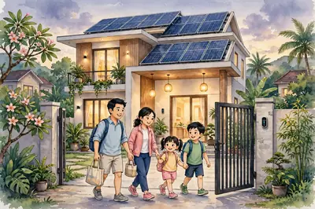
🏡 Ngôi nhà thông minh: đèn tự sáng, có pin mặt trời trên mái. (Tranh minh họa do AI vẽ)
Bằng điện thoại thông minh hoặc máy tính bảng có kết nối in-tơ-net.
Tiện nghi nghĩa là thuận tiện, dễ chịu. Đèn tự bật khi trời tối. Rèm tự kéo. Điều hòa tự chỉnh độ mát.
An ninh, an toàn: nhà có camera trông nhà. Có khóa cửa mở bằng vân tay.
Có cảm biến. Cảm biến là bộ phận tự 'cảm nhận' được. Cảm biến khói báo khi có cháy. Cảm biến người lạ báo khi có trộm.
Khi có việc xấu, nhà báo cho chủ nhà bằng 4 cách: chuông báo, tin nhắn, đèn báo, cuộc gọi tự động.
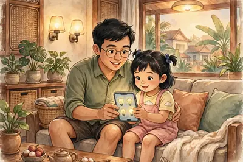
📱 Bấm điện thoại là đèn trong nhà bật. (Tranh minh họa do AI vẽ)
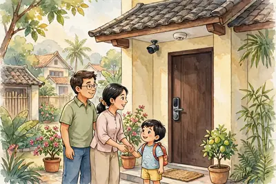
🎥 Các thiết bị giữ nhà an toàn: camera, cảm biến khói, khóa vân tay. (Tranh minh họa do AI vẽ)
➕ Kiến thức bổ sung — biết thêm để làm được bài tập: Khi có trộm hoặc cháy, nhà thông minh báo động bằng đủ 4 hình thức: chuông báo – tin nhắn – đèn báo – cuộc gọi tự động tới chủ nhà.
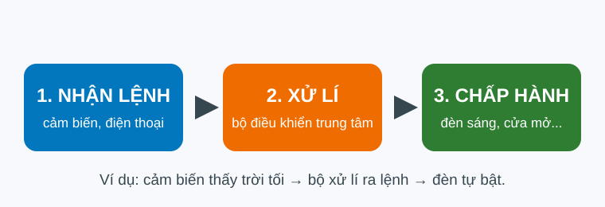
🔢 Nguyên tắc hoạt động: Nhận lệnh → Xử lí → Chấp hành. Đúng thứ tự này nhé!
Quan trọng nhất là thứ tự 3 bước không được đảo: Nhận lệnh → Xử lí → Chấp hành. Máy phải nhận lệnh trước, xử lí (nghĩ) rồi mới chấp hành (làm).
Nhà thông minh còn giúp tiết kiệm năng lượng. Năng lượng ở đây là điện.
Cảm biến thấy phòng không có người thì tự tắt đèn.
Em cũng làm được như nhà thông minh: tắt điện khi không dùng.
Mở cửa sổ đón ánh sáng và gió trời cũng là tiết kiệm điện.
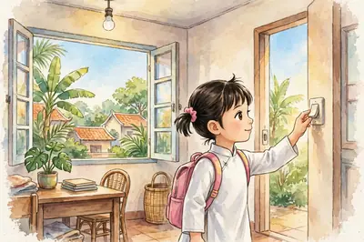
💡 Bé tắt đèn khi ra khỏi phòng — việc nhỏ mà tiết kiệm điện. (Tranh minh họa do AI vẽ)
⚡ Nhớ nhanh — bấm vào thẻ để lật xem đáp án
3 bước hoạt động của nhà thông minh là gì?
(Bấm vào thẻ để lật)
✅ Đáp ánNhận lệnh → Xử lí → Chấp hành.
Thiết bị nào báo cháy trong nhà thông minh?
(Bấm vào thẻ để lật)
✅ Đáp ánCảm biến khói.
⭐ Điểm cần nhớ: • Nhà thông minh: thiết bị tự làm việc hoặc điều khiển từ xa bằng điện thoại. • Nhà thông minh giúp: tiện nghi, an toàn, tiết kiệm điện. • Nguyên tắc 3 bước: Nhận lệnh → Xử lí → Chấp hành.
💡 Mẹo nhớ: Nhớ 3 bước như khi em nghe lời mẹ dặn: Nghe lệnh → Nghĩ → Làm.
🔍 Bí mật thú vị: Có ngôi nhà nghe được giọng nói! Chỉ cần nói 'tắt đèn' là đèn tắt ngay. Không cần bấm gì cả.
🧠 Sơ đồ tư duy
❓ Câu hỏi gợi nhớ
Là ngôi nhà có nhiều thiết bị thông minh. Các thiết bị tự làm việc, hoặc được điều khiển từ xa bằng điện thoại.
Ví dụ: camera trông nhà và cảm biến khói báo cháy. Còn có khóa cửa vân tay nữa.
Gồm 3 bước: Nhận lệnh → Xử lí → Chấp hành.
Ví dụ: tắt đèn khi ra khỏi phòng và mở cửa sổ đón ánh sáng, gió trời thay vì bật đèn, bật quạt.
🐟 Cá mua về, không ăn ngay sẽ bị ươn. Rau để ngoài trời nóng thì mau héo. Vậy làm sao giữ thực phẩm lâu hư? Đó là việc bảo quản thực phẩm.
Bảo quản là giữ cho thực phẩm lâu hư. Thực phẩm giữ được ngon và an toàn.
Thực phẩm bị hư do vi sinh vật. Vi sinh vật là sinh vật rất nhỏ. Mắt thường không nhìn thấy được.
Trời càng nóng, vi sinh vật càng sinh sôi nhanh. Đồ ăn càng mau ôi thiu.
Bảo quản tốt giúp giữ chất dinh dưỡng. Và không lãng phí đồ ăn.
Vì trời nóng làm vi sinh vật sinh sôi nhanh. Chúng làm thực phẩm ôi thiu, hỏng.
Cách 1: làm lạnh, làm đông bằng tủ lạnh. Lạnh làm vi sinh vật chậm lại.
Cách 2: phơi, sấy khô. Ví dụ: cá khô, tôm khô. Khô thì vi sinh vật khó sống.
Cách 3: muối chua. Ví dụ: dưa muối, cà muối.
Cách 4: đóng gói kín. Hút hết không khí trong túi (gọi là hút chân không). Ít không khí, thực phẩm lâu hư hơn.
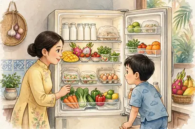
🧊 Làm lạnh bằng tủ lạnh. (Tranh minh họa do AI vẽ)
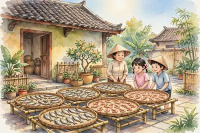
☀️ Phơi khô cá, tôm dưới nắng. (Tranh minh họa do AI vẽ)
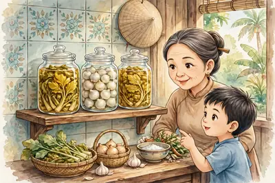
🥒 Muối chua: dưa muối, cà muối. (Tranh minh họa do AI vẽ)
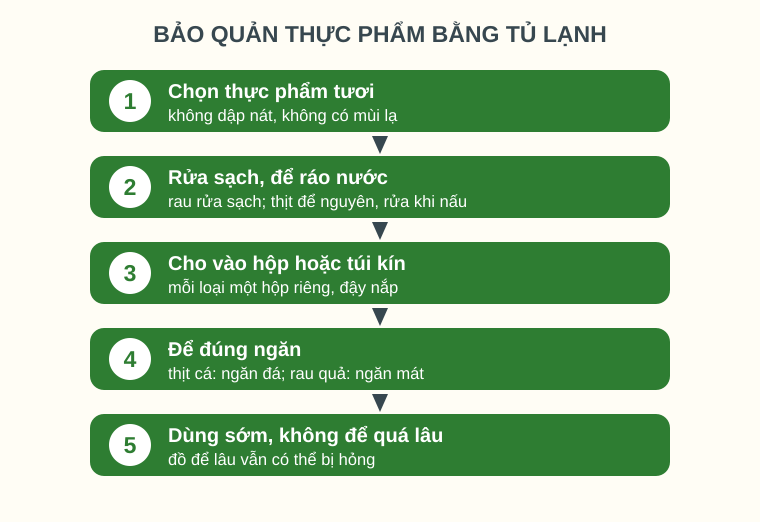
🔢 Các bước cất thực phẩm vào tủ lạnh. Em làm đúng thứ tự 1 → 5 nhé!
Quan trọng nhất là để đúng ngăn: thịt, cá để ngăn đá; rau, quả để ngăn mát. Để sai ngăn, thực phẩm vẫn mau hư.
Chế biến là biến thực phẩm sống thành món ăn.
Chế biến có dùng nhiệt: luộc, hấp, kho, chiên, xào, nướng. Nhiệt là lửa và hơi nóng.
Chế biến không dùng nhiệt: làm nộm, gỏi, trộn rau, muối chua, xay sinh tố.
Làm món nào cũng phải sạch: rửa tay, rửa thực phẩm, dụng cụ sạch. Nhớ: ăn chín, uống sôi.
🔥 Chế biến có dùng nhiệt: luộc, hấp, kho... (Tranh minh họa do AI vẽ)
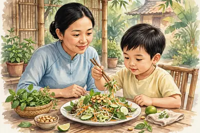
🥗 Chế biến không dùng nhiệt: món nộm (gỏi). (Tranh minh họa do AI vẽ)
➕ Kiến thức bổ sung — biết thêm để làm được bài tập: Tuyệt đối không ăn thực phẩm đã ôi thiu, bị mốc, có mùi lạ, hoặc đã hết hạn sử dụng. Hạn sử dụng là ngày cuối cùng còn ăn được, in trên bao bì.
⚡ Nhớ nhanh — bấm vào thẻ để lật xem đáp án
Kể 3 cách bảo quản thực phẩm hay gặp.
(Bấm vào thẻ để lật)
✅ Đáp ánLàm lạnh/đông – phơi sấy khô – muối chua.
Món nộm (gỏi) có dùng nhiệt không?
(Bấm vào thẻ để lật)
✅ Đáp ánKhông. Nộm là món không dùng nhiệt.
⭐ Điểm cần nhớ: • Bảo quản có 4 cách: làm lạnh/đông, phơi sấy khô, muối chua, đóng gói kín. • Chế biến có 2 kiểu: dùng nhiệt và không dùng nhiệt. • Luôn ăn sạch: rửa tay, rửa thực phẩm, ăn chín uống sôi.
💡 Mẹo nhớ: Nhớ 3 cách bảo quản của ông bà ta: Lạnh – Khô – Chua.
🔍 Bí mật thú vị: Ngày xưa chưa có tủ lạnh. Ông bà ta đã biết phơi cá khô và làm mắm để ăn được lâu. Hay thật!
🧠 Sơ đồ tư duy
❓ Câu hỏi gợi nhớ
Ví dụ: làm lạnh bằng tủ lạnh, phơi sấy khô, muối chua. Còn có đóng gói kín nữa.
Cách muối chua — như dưa muối, cà muối của gia đình em.
Kiểu không dùng nhiệt. Vì món nộm chỉ trộn rau củ với gia vị, không nấu trên lửa.
💗 Hôm nay em làm một việc đặc biệt: tự tay chuẩn bị một bữa ăn cho cả nhà. Đó là dự án 'Bữa ăn kết nối yêu thương'.
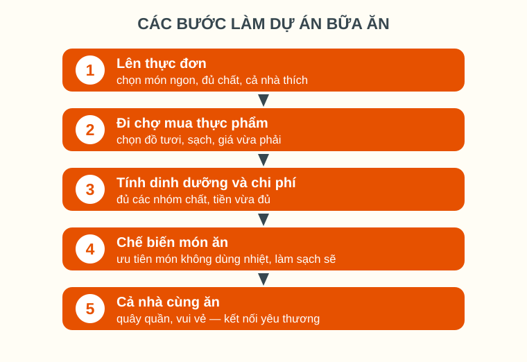
🔢 Dự án có 5 bước. Em làm lần lượt từ bước 1 đến bước 5 nhé!
Bước 1 – Lên thực đơn. Thực đơn là danh sách các món sẽ làm. Chọn món đủ chất. Chọn món cả nhà đều thích.
Bước 2 – Đi chợ. Chọn thực phẩm tươi, sạch. Nhìn giá trước khi mua nhé.
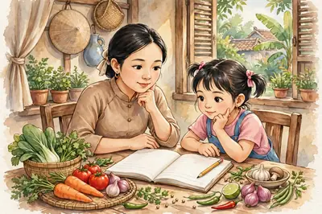
📝 Bước 1: cùng lên thực đơn. (Tranh minh họa do AI vẽ)
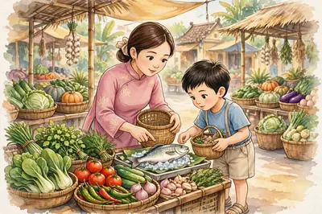
🛒 Bước 2: đi chợ, chọn đồ tươi. (Tranh minh họa do AI vẽ)
Chọn đồ tươi, sạch. Không lấy đồ dập nát. Không lấy đồ có mùi lạ.
Bước 3 – Tính toán. Bữa ăn phải đủ các nhóm chất (như Bài 4 em đã học).
Tiền mua đồ phải vừa với số tiền em có. Cộng giá từng món trước khi mua.
Bước 4 – Chế biến. Em chọn món không dùng nhiệt. Ví dụ: nộm, gỏi, rau trộn. Món này an toàn cho em tự làm.
Khi làm, em đeo găng tay. Rau củ phải rửa thật sạch.
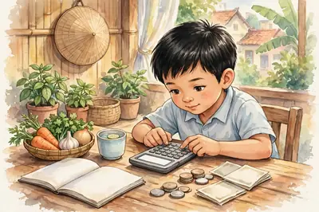
🧮 Bước 3: tính tiền cho vừa đủ. (Tranh minh họa do AI vẽ)
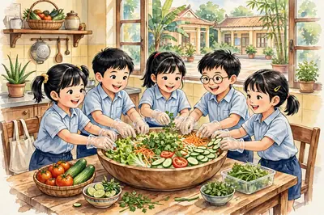
🥗 Bước 4: cùng làm món nộm. (Tranh minh họa do AI vẽ)
Đáp án B. B nói đủ việc chính của dự án: tự chuẩn bị bữa ăn + đủ chất + vừa tiền + cho cả nhà. A chỉ nói một bước. C không phải việc chính.
Bước 5 – Cả nhà cùng ăn. Em mời ông bà, bố mẹ ăn món em làm.
Bữa ăn do chính em làm giúp cả nhà gần nhau hơn.
Vì thế dự án mới có tên là 'kết nối yêu thương'.
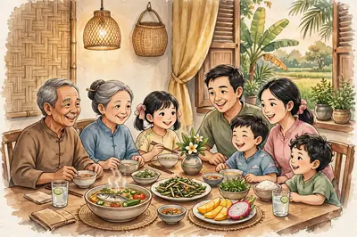
💗 Cả nhà quây quần bên bữa ăn em chuẩn bị. (Tranh minh họa do AI vẽ)
⚡ Nhớ nhanh — bấm vào thẻ để lật xem đáp án
Bước nào làm trước khi đi chợ?
(Bấm vào thẻ để lật)
✅ Đáp ánBước lên thực đơn.
Món em tự làm trong dự án là món thế nào?
(Bấm vào thẻ để lật)
✅ Đáp ánMón không dùng nhiệt, như nộm, gỏi.
⭐ Điểm cần nhớ: • 5 bước: lên thực đơn → đi chợ → tính toán → chế biến → cả nhà cùng ăn. • Món em tự làm: món không dùng nhiệt (nộm, gỏi). • Bữa ăn phải đủ chất và vừa với số tiền.
💡 Mẹo nhớ: Nhớ thứ tự 5 bước: Nghĩ món – Mua đồ – Tính tiền – Làm món – Mời ăn.
🔍 Bí mật thú vị: Ở nhiều nước, trẻ em cũng học nấu ăn ở trường như em. Biết nấu ăn là một kĩ năng sống rất quý!
🧠 Sơ đồ tư duy
❓ Câu hỏi gợi nhớ
Gồm 5 bước: lên thực đơn → đi chợ → tính toán → chế biến → cả nhà cùng ăn.
Bước lên thực đơn. Nghĩ món trước, rồi mới đi chợ mua đúng thứ cần.
Vì món không dùng nhiệt an toàn cho em. Em không phải dùng bếp lửa, dao nóng, dầu sôi.
Là bữa ăn em tự làm giúp cả nhà quây quần, gần gũi và yêu thương nhau hơn.
👕 Sáng nay em mặc gì đi học? Đồng phục! Trang phục không chỉ để che người. Nó còn giúp em đẹp hơn. Và cho mọi người biết em là ai.
Trang phục là quần áo và những đồ em mặc trên người.
Việc thứ nhất: bảo vệ cơ thể. Chống nắng, chống lạnh, tránh côn trùng đốt.
Việc thứ hai: làm đẹp cho con người.
Việc thứ ba: cho biết em là ai. Đồng phục cho biết em học trường nào. Áo bác sĩ cho biết người đó làm nghề y.
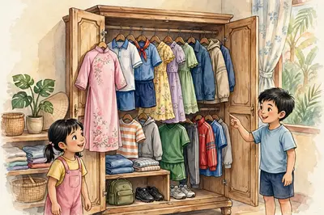
👗 Tủ quần áo có rất nhiều loại trang phục khác nhau. (Tranh minh họa do AI vẽ)👮 Nhìn trang phục là biết nghề: học sinh, bác sĩ, đầu bếp, công an. (Tranh minh họa do AI vẽ)
Người đó làm nghề y (bác sĩ, y tá). Trang phục cho biết nghề nghiệp của người mặc.
Đáp án B. B gộp đủ 3 việc của trang phục. A và C đều đúng nhưng chỉ là chi tiết nhỏ.
Trang phục rất đa dạng. Đa dạng là có nhiều loại khác nhau.
Khác nhau theo tuổi: đồ trẻ em khác đồ người lớn.
Khác nhau theo việc làm: đi học mặc đồng phục. Đá bóng mặc đồ thể thao.
Khác nhau theo mùa: mùa hè mặc áo mỏng, mát. Mùa đông mặc áo ấm.
Khác nhau theo phong tục: ngày Tết, nhiều người mặc áo dài.
Quần áo được may từ vải. Có 3 loại vải hay gặp.
Vải sợi thiên nhiên: làm từ thiên nhiên, như cây bông, tơ tằm. Mặc thoáng mát, thấm mồ hôi tốt.
Vải bông (cotton): mềm, mát. Vải tơ tằm: mềm, bóng, đẹp. Nhưng tơ tằm đắt tiền và khó giữ.
Vải sợi hóa học: do nhà máy làm ra. Ví dụ: vải ni-lon. Bền, ít nhăn, mau khô. Nhưng kém thoáng, ít thấm mồ hôi.
Vải sợi pha: trộn sợi thiên nhiên với sợi hóa học. Vừa mát, vừa bền.
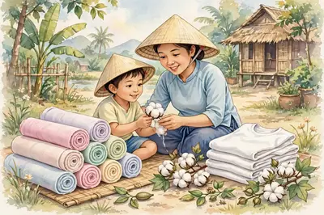
🌿 Vải bông: mềm, mát, thấm mồ hôi. (Tranh minh họa do AI vẽ)
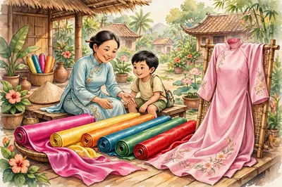
✨ Vải tơ tằm: mềm, bóng, sang trọng. (Tranh minh họa do AI vẽ)🧥 Vải sợi hóa học: bền, ít nhăn, mau khô. (Tranh minh họa do AI vẽ)
➕ Kiến thức bổ sung — biết thêm để làm được bài tập: Muốn biết một chiếc áo làm từ vải gì, em xem nhãn mác trên áo. Nhãn ghi rõ loại vải và cách giặt giữ.
⚡ Nhớ nhanh — bấm vào thẻ để lật xem đáp án
Vải bông mặc có mát không? Vì sao?
(Bấm vào thẻ để lật)
✅ Đáp ánMát. Vì vải bông thấm mồ hôi tốt.
Nhìn áo trắng của bác sĩ, em biết điều gì?
(Bấm vào thẻ để lật)
✅ Đáp ánNgười đó làm nghề y.
⭐ Điểm cần nhớ: • Trang phục có 3 việc: bảo vệ cơ thể, làm đẹp, cho biết nghề nghiệp. • Vải thiên nhiên (bông, tơ tằm): mát, thấm mồ hôi tốt. • Vải hóa học: bền, ít nhăn, nhưng kém thoáng.
💡 Mẹo nhớ: Nhớ tính chất vải bằng cảm giác: thiên nhiên thì mát — hóa học thì bền.
🔍 Bí mật thú vị: Tơ tằm lấy từ kén của con tằm. Một chiếc áo lụa cần tơ của hàng nghìn con tằm đấy!
🧠 Sơ đồ tư duy
❓ Câu hỏi gợi nhớ
Trang phục bảo vệ cơ thể, làm đẹp cho con người, và cho biết nghề nghiệp, sở thích của người mặc.
Ví dụ: bác sĩ mặc áo trắng; công an mặc đồng phục xanh. Còn có đầu bếp, học sinh…
Vải bông mềm, thoáng mát, thấm mồ hôi tốt. Mùa hè nóng, mặc áo bông sẽ mát và dễ chịu.
Vải hóa học bền hơn, ít nhăn, mau khô. Nhưng vải hóa học kém thoáng và ít thấm mồ hôi hơn vải thiên nhiên.
🧺 Quần áo mặc xong thì phải giặt. Áo đẹp mà bẩn và nhàu thì không đẹp nữa. Hôm nay em học cách dùng và giữ quần áo cho bền đẹp nhé!
Chọn trang phục phải hợp với em: vừa người, em thấy thích.
Phải hợp với việc em làm: đi học mặc đồng phục. Chơi thể thao mặc đồ thể thao.
Phải hợp với tiền của gia đình: không đòi mua đồ quá đắt tiền.
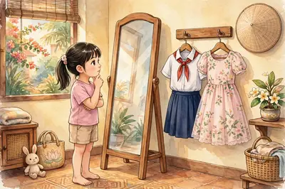
🪞 Chọn đồ hợp với mình và hợp với việc sắp làm. (Tranh minh họa do AI vẽ)
Chọn đồng phục của trường. Vì hợp với việc đi học, gọn gàng và đúng quy định.
Giặt: phân loại trước. Áo trắng giặt riêng. Áo màu giặt riêng. Giặt chung, áo trắng dễ bị lem màu.
Trước khi giặt, xem nhãn mác trên áo. Nhãn có kí hiệu dặn cách giặt, cách là.
Phơi: phơi nơi thoáng gió. Áo màu phơi nắng gắt thì nên lộn trái để giữ màu.
Là (ủi): chỉnh nhiệt độ vừa với loại vải. Vải mỏng dùng nhiệt nhẹ, kẻo cháy vải.
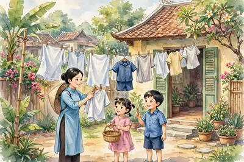
☀️ Phơi quần áo nơi thoáng gió, có nắng nhẹ. (Tranh minh họa do AI vẽ)
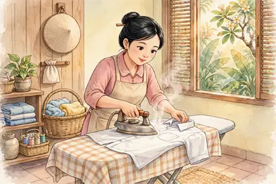
👔 Là áo với nhiệt độ vừa với vải. (Tranh minh họa do AI vẽ)
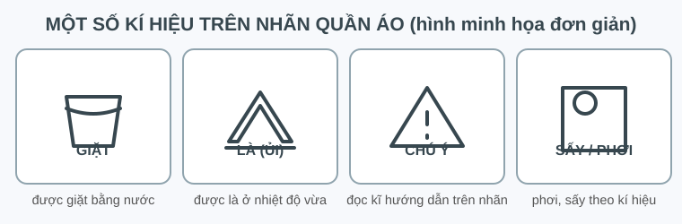
🏷️ Một số kí hiệu trên nhãn quần áo. Gặp kí hiệu lạ, em hỏi người lớn nhé!
Quan trọng nhất: trên nhãn quần áo có kí hiệu dặn cách chăm sóc. Làm theo kí hiệu thì quần áo không bị hỏng.
Quần áo giặt sạch phải phơi thật khô mới được cất. Còn ẩm là bị mốc ngay.
Gấp gọn gàng hoặc treo lên móc. Tủ quần áo phải khô ráo, thoáng.
Áo rách một chút thì vá ngay. Để lâu, vết rách càng to thêm.
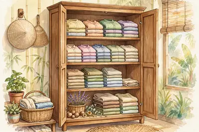
🗄️ Tủ quần áo khô ráo, gấp gọn gàng thì áo không bị mốc. (Tranh minh họa do AI vẽ)
⚡ Nhớ nhanh — bấm vào thẻ để lật xem đáp án
Trước khi giặt, em xem gì trên quần áo?
(Bấm vào thẻ để lật)
✅ Đáp ánXem nhãn mác và các kí hiệu giặt – là.
Áo chưa khô mà đã cất vào tủ thì sao?
(Bấm vào thẻ để lật)
✅ Đáp ánÁo bị ẩm mốc và có mùi hôi.
⭐ Điểm cần nhớ: • Chọn đồ: hợp với em, hợp việc làm, hợp tiền của gia đình. • Giặt: xem nhãn mác trước, giặt riêng áo trắng và áo màu. • Cất giữ: khô ráo, gấp gọn, rách thì vá ngay.
✨ Có thời, mọi người thích mặc quần ống loe. Sau này lại thích quần ống hẹp. Cách ăn mặc được nhiều người thích ở một lúc — người ta gọi là thời trang.
Thời trang là cách ăn mặc được nhiều người ưa chuộng. Ưa chuộng là được nhiều người thích.
Thời trang chỉ đúng trong một khoảng thời gian và một nơi nhất định.
Thời trang luôn thay đổi. Năm này thích kiểu này. Vài năm sau lại thích kiểu khác.
Kiểu cũ có khi quay trở lại sau nhiều năm.
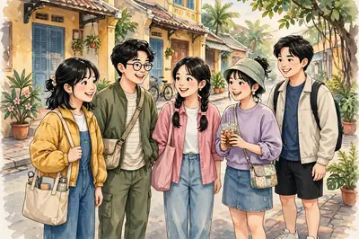
👗 Thời trang: cách ăn mặc được nhiều người thích ở một lúc. (Tranh minh họa do AI vẽ)
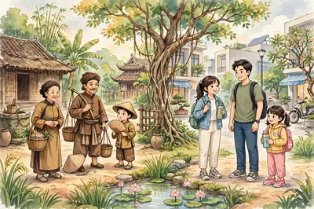
🕰️ Trang phục xưa và nay khác nhau nhiều — thời trang luôn thay đổi. (Tranh minh họa do AI vẽ)
Đáp án B. B nói đủ 2 ý chính: nhiều người thích và luôn thay đổi. A sai: đồ bình thường cũng có thể thành mốt. C sai hẳn: thời trang đổi luôn luôn.
Mỗi người có phong cách riêng. Phong cách là cách ăn mặc riêng của mỗi người.
Phong cách thể thao: khỏe khoắn, thoải mái. Áo phông, quần soóc, giày thể thao, mũ lưỡi trai.
Phong cách thanh lịch: gọn gàng, lịch sự. Hợp khi đi học và đi dự tiệc.
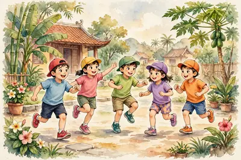
⚽ Phong cách thể thao: khỏe, thoải mái. (Tranh minh họa do AI vẽ)🎀 Phong cách thanh lịch: gọn gàng, lịch sự. (Tranh minh họa do AI vẽ)
Phong cách thể thao — mặc thoải mái, chạy nhảy dễ dàng.
Em hãy tập chọn phong cách hợp với mình: hợp người, hợp việc, hợp sở thích.
Không chạy theo mốt bằng mọi giá. Đồ đắt mà không hợp với em thì vẫn không đẹp.
Em nhớ nhé: sạch sẽ và gọn gàng là đẹp nhất.
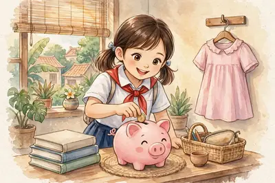
🐷 Không chạy theo mốt tốn kém. Tiền để dành làm việc có ích hơn. (Tranh minh họa do AI vẽ)
⚡ Nhớ nhanh — bấm vào thẻ để lật xem đáp án
Thời trang là gì?
(Bấm vào thẻ để lật)
✅ Đáp ánCách ăn mặc được nhiều người thích trong một lúc.
Mặc thế nào là đẹp nhất?
(Bấm vào thẻ để lật)
✅ Đáp ánSạch sẽ, gọn gàng, hợp với mình.
⭐ Điểm cần nhớ: • Thời trang = cách ăn mặc được nhiều người thích trong một lúc. • Thời trang luôn thay đổi, có khi quay vòng trở lại. • Mặc đẹp nhất là: hợp với mình, sạch sẽ, gọn gàng.
💡 Mẹo nhớ: Nhớ câu thần chú: 'Mốt thì đổi — sạch gọn thì không'.
🔍 Bí mật thú vị: Quần jean đã được mặc hơn 150 năm mà vẫn chưa hết mốt. Đúng là có kiểu cũ quay lại mãi!
🧠 Sơ đồ tư duy
❓ Câu hỏi gợi nhớ
Thời trang là cách ăn mặc được nhiều người ưa chuộng trong một khoảng thời gian nhất định.
Thời trang thay đổi theo thời gian: kiểu mặc xưa và nay rất khác nhau. Có kiểu cũ còn quay trở lại.
Phong cách thể thao (khỏe, thoải mái) và phong cách thanh lịch (gọn gàng, lịch sự).
Vì chạy theo mốt rất tốn kém, lãng phí. Đồ đắt mà không hợp với mình thì vẫn không đẹp.
💡 Đèn sáng, quạt quay, nồi cơm chín thơm — tất cả đều nhờ điện. Hôm nay mình tìm hiểu đồ dùng điện trong nhà nhé!
Đồ dùng điện là đồ dùng biến điện năng thành dạng năng lượng khác. Điện năng là năng lượng của dòng điện.
Đèn biến điện thành ánh sáng. Quạt biến điện thành chuyển động quay.
Có 3 nhóm đồ dùng điện: điện – quang (đèn), điện – nhiệt (nồi cơm, bếp), điện – cơ (quạt, máy giặt).
Trên đồ dùng ghi 220V: đó là điện áp định mức. Điện áp định mức là điện áp giúp đồ dùng hoạt động tốt nhất. Điện nhà ở nước ta là 220V.
Trên đồ dùng ghi 1000W: đó là công suất định mức. Công suất là mức điện năng đồ dùng tiêu thụ, tính bằng oát (W). Công suất càng lớn càng tốn điện.
Phải dùng đúng điện áp định mức. Điện áp quá cao có thể làm cháy đồ dùng. Điện áp quá thấp làm đồ dùng chạy yếu.
Trước khi mua, em xem điện áp và công suất ghi trên đồ dùng. Nhờ đó em biết đồ có hợp với điện nhà mình không.
Nhóm điện – quang, vì đèn biến điện năng thành ánh sáng.
Đó là điện áp định mức. Điện áp định mức là điện áp giúp đồ dùng hoạt động tốt nhất. Điện nhà ở nước ta là 220V.
⚡ Nhớ nhanh — bấm vào thẻ để lật xem đáp án
3 nhóm đồ dùng điện là gì?
(Bấm vào thẻ để lật)
✅ Đáp ánĐiện – quang (đèn), điện – nhiệt (nồi cơm, bếp) và điện – cơ (quạt, máy giặt).
Trước khi dùng đồ điện cần xem gì?
(Bấm vào thẻ để lật)
✅ Đáp ánXem điện áp và công suất định mức ghi trên đồ dùng để biết có hợp với điện nhà mình không.
⭐ Điểm cần nhớ: • Đồ dùng điện biến điện năng thành dạng năng lượng khác. • 3 nhóm: điện – quang (đèn), điện – nhiệt (nồi cơm, bếp), điện – cơ (quạt, máy giặt). • Điện áp định mức (ví dụ 220V) là điện áp giúp đồ dùng hoạt động tốt nhất. • Công suất định mức (tính bằng oát) càng lớn thì càng tốn điện; dùng đúng điện áp mới bền và an toàn.
✅ Đáp ánĐèn LED tiết kiệm điện nhất và bền nhất, lại ít tỏa nhiệt.
⭐ Điểm cần nhớ: • 3 loại đèn: sợi đốt, huỳnh quang, LED. • Đèn sợi đốt tốn điện nhất vì phần lớn điện biến thành nhiệt. • Đèn LED tiết kiệm điện nhất, bền và ít tỏa nhiệt. • Thay bóng hỏng phải ngắt điện trước; bóng huỳnh quang vỡ thì báo người lớn dọn giúp.
🍚 Cơm chín thơm, cả nhà ăn ngon — nhờ nồi cơm điện. Nồi hoạt động thế nào?
Nồi cơm điện thuộc nhóm điện – nhiệt. Vì nó biến điện năng thành nhiệt để nấu chín cơm.
Cấu tạo chính: vỏ nồi, nồi trong, mâm nhiệt, bộ điều khiển, dây nguồn. Mâm nhiệt ở đáy nồi là bộ phận làm nóng.
Điện làm mâm nhiệt nóng lên. Nhiệt truyền vào nồi trong và nấu chín cơm. Cơm chín thì nồi tự chuyển sang giữ ấm.
Trước khi nấu: lau khô mặt ngoài nồi trong rồi mới đặt vào nồi. Nồi ướt đặt vào rất nguy hiểm.
Khi đang nấu: đậy kín nắp, không mở nắp nhiều lần. Mở nắp làm hơi nóng thoát ra, cơm lâu chín và tốn điện.
An toàn: tay khô mới cắm điện. Tay ướt cắm điện rất dễ bị giật vì nước dẫn điện.
Sau khi dùng xong: rút phích điện ra khỏi ổ cắm. Để nồi cắm điện cả ngày vừa tốn điện vừa dễ gây sự cố.
Mâm nhiệt ở đáy nồi.
Không. Tay ướt cắm điện rất dễ bị giật vì nước dẫn điện.
⚡ Nhớ nhanh — bấm vào thẻ để lật xem đáp án
Bộ phận nào làm chín cơm trong nồi cơm điện?
(Bấm vào thẻ để lật)
✅ Đáp ánMâm nhiệt ở đáy nồi làm nóng và nấu chín cơm.
Trước khi nấu cơm cần làm gì?
(Bấm vào thẻ để lật)
✅ Đáp ánLau khô mặt ngoài nồi trong rồi mới đặt vào nồi, để nồi tiếp xúc tốt với mâm nhiệt và an toàn.
⭐ Điểm cần nhớ: • Nồi cơm điện thuộc nhóm điện – nhiệt: biến điện thành nhiệt nấu chín cơm. • Mâm nhiệt ở đáy nồi là bộ phận làm nóng; cơm chín thì nồi tự giữ ấm. • Nấu đúng cách: lau khô nồi trong, đậy kín nắp, không mở nắp nhiều lần. • An toàn: tay khô mới cắm điện, rút phích sau khi dùng xong.
🍲 Bếp hồng ngoại nấu canh, xào rau rất nhanh. Bếp làm nóng thức ăn bằng gì?
Bếp hồng ngoại thuộc nhóm điện – nhiệt. Vì nó biến điện năng thành nhiệt để nấu chín thức ăn.
Bếp dùng tia hồng ngoại làm nóng mặt bếp và đáy nồi. Nhờ đó thức ăn trong nồi được nấu chín.
Bếp không kén nồi: dùng được nồi inox, nồi nhôm hay nồi đất. Đây là một ưu điểm của bếp.
Muốn nấu nhanh hay chậm: chỉnh mức nhiệt trên bảng điều khiển. Món canh cần lửa nhỏ, món xào cần lửa lớn.
Sau khi nấu xong, mặt bếp còn rất nóng. Chạm tay vào sẽ bị bỏng nên em phải chờ bếp nguội.
Không để khăn vải, giấy và vật dễ cháy gần bếp đang nấu. Những vật này rất dễ bắt lửa.
Trẻ em chỉ dùng bếp khi có người lớn hướng dẫn. Vì bếp rất nóng và dùng điện.
Lau chùi bếp: chỉ lau khi bếp đã nguội hẳn và đã ngắt điện. Lau khi bếp còn nóng sẽ bị bỏng, lau khi tay ướt dễ bị giật.
Tiết kiệm điện: đậy nắp nồi, chọn mức nhiệt vừa đủ. Mở nắp suốt làm nhiệt thoát ra ngoài.
Dùng tia hồng ngoại làm nóng mặt bếp và đáy nồi.
Không. Chỉ dùng khi có người lớn hướng dẫn.
⚡ Nhớ nhanh — bấm vào thẻ để lật xem đáp án
Bếp hồng ngoại làm nóng bằng gì?
(Bấm vào thẻ để lật)
✅ Đáp ánBằng tia hồng ngoại làm nóng mặt bếp và đáy nồi.
Khi nào mới được lau chùi bếp hồng ngoại?
(Bấm vào thẻ để lật)
✅ Đáp ánKhi bếp đã nguội hẳn và đã ngắt điện, lau khi còn nóng sẽ bị bỏng.
⭐ Điểm cần nhớ: • Bếp hồng ngoại thuộc nhóm điện – nhiệt, dùng tia hồng ngoại làm nóng mặt bếp và đáy nồi. • Bếp không kén nồi: dùng được nồi inox, nồi nhôm, nồi đất. • Chỉnh mức nhiệt trên bảng điều khiển: canh lửa nhỏ, xào lửa lớn. • An toàn: chờ bếp nguội hẳn mới lau; không chạm mặt bếp nóng; chỉ dùng khi có người lớn hướng dẫn.
Bài 14. Dự án: An toàn và tiết kiệm trong gia đình
🏠 Nhà em có an toàn về điện chưa? Có tiết kiệm điện chưa? Hôm nay mình làm dự án kiểm tra nhé!
Quy tắc 1: tay khô mới chạm vào đồ điện. Tay ướt chạm vào ổ điện rất dễ bị điện giật vì nước dẫn điện.
Quy tắc 2: không chạm vào dây điện hở vỏ. Dây hở rất dễ gây giật — không chạm vào, báo người lớn ngay.
Quy tắc 3: đồ điện hỏng thì báo người lớn, gọi thợ sửa. Không tự sửa, tự sửa rất dễ bị giật.
Một ổ cắm cắm quá nhiều đồ sẽ quá tải. Ổ quá tải nóng lên và có thể gây cháy.
Có sự cố về điện: không chạm vào chỗ sự cố, báo người lớn ngay. Người lớn sẽ ngắt điện và gọi thợ sửa.
Tiết kiệm điện: tắt đèn, quạt khi ra khỏi phòng. Dùng đèn LED. Rút phích khi không dùng nữa.
Đồ điện vẫn tốn một ít điện ở chế độ chờ dù không dùng. Rút phích cắm giúp tiết kiệm điện và an toàn hơn.
Dự án kiểm tra: xem dây điện có hở không, ổ cắm có quá tải không, rồi báo người lớn xử lí. Phát hiện sớm giúp nhà an toàn.
Nhắc cả nhà: làm bảng nhắc tắt đèn, rút phích dán ở cửa phòng. Cả nhà cùng làm thì tiết kiệm được nhiều.
Không chạm vào, báo người lớn ngay.
Tắt đèn, quạt khi ra khỏi phòng học.
⚡ Nhớ nhanh — bấm vào thẻ để lật xem đáp án
3 quy tắc an toàn điện cần nhớ là gì?
(Bấm vào thẻ để lật)
✅ Đáp ánTay khô mới dùng điện, không chạm vào dây điện hở, đồ hỏng thì báo người lớn, không tự sửa.
3 cách tiết kiệm điện trong nhà là gì?
(Bấm vào thẻ để lật)
✅ Đáp ánTắt đèn khi ra khỏi phòng, dùng đèn LED và rút phích cắm khi không dùng nữa.
⭐ Điểm cần nhớ: • 3 quy tắc an toàn: tay khô mới dùng điện; không chạm dây điện hở; đồ hỏng báo người lớn, không tự sửa. • Một ổ cắm quá nhiều đồ sẽ quá tải, nóng lên và có thể gây cháy. • Có sự cố về điện: không chạm vào, báo người lớn ngay. • 3 cách tiết kiệm điện: tắt đèn, quạt khi ra khỏi phòng; dùng đèn LED; rút phích khi không dùng nữa.
🃏 Flashcard của bài
Hình minh họa: Dự án: An toàn và tiết kiệm trong gia đình.
📌 Lưu ý: nhãn "Giữa kì 1 / Sau giữa kì / Mở rộng học kì 1 / Học kì 2" trên từng bài chỉ là gợi ý theo thứ tự sách giáo khoa — phân kỳ học kì 1/2 (Bài 1–9 / Bài 10–14), em cứ học theo đúng thứ tự bài trên lớp nhé.


![Hình gợi nhớ](data:image/svg+xml;charset=utf-8,%3Csvg%20viewBox%3D%220%200%20300%20120%22%20style%3D%22width%3A100%25%3Bmax-width%3A400px%3Bheight%3Aauto%3Bdisplay%3Ablock%3Bmargin%3A0%20auto%22%20xmlns%3D%22http%3A%2F%2Fwww.w3.org%2F2000%2Fsvg%22%3E%3Cg%20transform%3D%22translate%285%2C15%29%20scale%280.85%29%22%3E%3Crect%20x%3D%2226%22%20y%3D%2222%22%20width%3D%2248%22%20height%3D%2234%22%20rx%3D%226%22%20fill%3D%22%23e3f2fd%22%20stroke%3D%22%231565c0%22%20stroke-width%3D%222%22%2F%3E%3Cg%20fill%3D%22%23ffca28%22%3E%3Crect%20x%3D%2232%22%20y%3D%2230%22%20width%3D%228%22%20height%3D%2218%22%2F%3E%3Crect%20x%3D%2246%22%20y%3D%2230%22%20width%3D%228%22%20height%3D%2218%22%2F%3E%3Crect%20x%3D%2260%22%20y%3D%2230%22%20width%3D%228%22%20height%3D%2218%22%2F%3E%3C%2Fg%3E%3Cline%20x1%3D%2250%22%20y1%3D%2256%22%20x2%3D%2250%22%20y2%3D%2270%22%20stroke%3D%22%2337474f%22%20stroke-width%3D%223%22%2F%3E%3C%2Fg%3E%3Cg%20transform%3D%22translate%28105%2C15%29%20scale%280.85%29%22%3E%3Cpath%20d%3D%22M%2024%2C44%20L%2076%2C44%20L%2070%2C82%20Q%2050%2C90%2030%2C82%20Z%22%20fill%3D%22%2378909c%22%20stroke%3D%22%2337474f%22%20stroke-width%3D%222%22%2F%3E%3Cpath%20d%3D%22M%2036%2C36%20Q%2042%2C24%2050%2C36%20Q%2058%2C24%2064%2C36%22%20fill%3D%22none%22%20stroke%3D%22%2390caf9%22%20stroke-width%3D%223%22%20stroke-linecap%3D%22round%22%2F%3E%3C%2Fg%3E%3Cg%20transform%3D%22translate%28205%2C15%29%20scale%280.85%29%22%3E%3Ccircle%20cx%3D%2250%22%20cy%3D%2250%22%20r%3D%2230%22%20fill%3D%22%23eceff1%22%20stroke%3D%22%2337474f%22%20stroke-width%3D%223%22%2F%3E%3Ccircle%20cx%3D%2250%22%20cy%3D%2250%22%20r%3D%228%22%20fill%3D%22%2378909c%22%2F%3E%3Cg%20stroke%3D%22%2337474f%22%20stroke-width%3D%222%22%3E%3Cline%20x1%3D%2250%22%20y1%3D%2220%22%20x2%3D%2250%22%20y2%3D%2242%22%2F%3E%3Cline%20x1%3D%2250%22%20y1%3D%2258%22%20x2%3D%2250%22%20y2%3D%2280%22%2F%3E%3Cline%20x1%3D%2220%22%20y1%3D%2250%22%20x2%3D%2242%22%20y2%3D%2250%22%2F%3E%3Cline%20x1%3D%2258%22%20y1%3D%2250%22%20x2%3D%2280%22%20y2%3D%2250%22%2F%3E%3C%2Fg%3E%3C%2Fg%3E%3C%2Fsvg%3E)